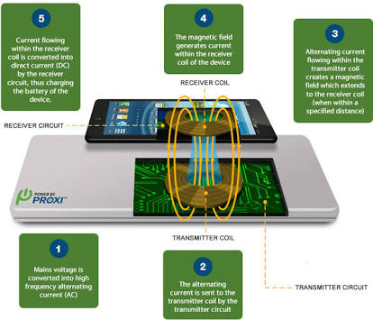

<!DOCTYPE html>
<html>
  <head>
    <meta charset="utf-8">
    <meta name="viewport" content="width=device-width, initial-scale=1, maximum-scale=1">
    <title>ProjectTKPPL</title>
    <link rel="stylesheet" type="text/css" href="css++/style.css">
    <link rel="stylesheet" type="text/css" href="css++/themes.css">
  </head>
  <style>
    .orion {
      background-repeat:no-repeat;
      background-size:100%;
      background-image:url(images/orion.jpg)
    }
    .rion {
      background-image: url('build/pp.jpg')
    }
    
  </style>
</html>
<body class="carousel orion">
  <div>
    <article>
      <section style="background-repeat:no-repeat;background-size:100%;background-image:url(build/orionindex.jpg)">
        <h1 style="margin-top:-150px;">Welcome to our Persentation</h1>
      </section>
      <section>
        <h1>Wireless Charging</h1>
      </section>
      <section style="background-image:url(build/Orion1.jpg);">
        <h1 style="font-size:70px;color: white; margin-top: -180px; text-align: center; margin-left: -617px; width: 1276px; font-size: 90px;">Pernahkah Anda mendengar tentang Teknologi Wireless Charging ?. Mungkin timbul petanyaan di benak Anda, sejenis apakah teknologi ini ?</h1>
        <h3 style="font-size:30px;">Follow me <a href="https://github.com/FaXcodark">@Github</a></h3>
      </section>
      <section>
        <h1 style="color: white; margin-top: -117px; text-align: center; margin-left: -961px; font-size: 90px; width: 1929px;">Wireless Charging Diperkenalkan pertama kali Pada tahun 2009, Oleh Smartphone Palm Pre, namun pasar kurang merespons sehingga produk itu berlalu begitu saja.</h1>
        <h3 style="font-size:30px;">Follow me <a href="https://github.com/FaXcodark">@Github</a></h3>
      </section>
      <section style="background-repeat:no-repeat;background-size:100%;background-image:url(build/orion4.jpg)">
        <h1 style="color: white; margin-top: -208px; text-align: center; margin-left: -948px; font-size: 90px; width: 1908px;">Saat ini, sejumlah perusahaan besar (ada 120 perusahaan) termasuk Sony, Nokia, Texas Instruments, dan Samsung telah membentuk Wireless Power Consortium (WPC) untuk mempromosikan wireless charging berbasis teknologi induksi. Hasilnya adalah standar Qi (dibaca chi, yang berasal dari Bahasa Cina yang berarti energi).</h1>
      </section>
      <section>
        <h1 style="color: white; margin-top: -208px; text-align: center; margin-left: -948px; font-size: 90px; width: 1908px;">Pada awal September 2012 lalu WPC mengumumkan telah mensertifikasi 110 produk konsumer mulai dari smartphone, charging pad, game controller, perekam Blu-ray Disc, charger telepon untuk mobil, jam, sampai modul charger yang dapat dipasang di meja dan furnitur lainnya.</h1>
      </section>
      <section style="background-repeat:no-repeat;background-size:100%;background-image:url(build/orion1.jpg)">
        <h1 style="margin-top:-180px;;">Cara Kerja Wireless Charging</h1>
      </section>
      <section data-bespoke-backdrop="emphatic" class="emphatic-text">
        <h1 style="color: white; margin-top: -208px; text-align: center; margin-left: -948px; font-size: 90px; width: 1908px;">Kemajuan dalam bidang wireless tidak hanya dari segi transfer data. Bahkan saat ini pengisian baterai pun telah dapat dilakukan tanpa kabel. Hanya dengan meletakkan hanphone ke atas unit wireless charger, smartphone kamu akan langsung terisi baterai secara otomatis.</h1>
        <h3 style="font-size:30px;">Follow me <a href="https://github.com/FaXcodark">@Github</a></h3>
      </section>
      <section style="background-repeat:no-repeat;background-size:100%;background-image:url(build/orion7 .jpg)">
        <h1 style="color: white; margin-top: -208px; text-align: center; margin-left: -948px; font-size: 90px; width: 1908px;">Pengisian nirkabel atau wireless charging didasarkan pada prinsip wireless daya atau magnetic resonance – yang mana listrik ditransfer antara dua benda melalui kumparan. <br> Wireless charging terdiri dari kumparan primer sebagai charger (biasanya berbentuk papan atau silinder tipis), sedangkan kumparan sekunder terletak pada bagian belakang ponsel.</h1>
      </section>
      <section style="background-repeat:no-repeat;background-size:100%;background-image:url(build/orionindex.jpg)">
        <h1 style="color: white; margin-top: -298px; text-align: center; margin-left: -948px; font-size: 90px; width: 1908px;">Diagram di bawah menunjukkan proses transfer daya nirkabel ke-5 langkah:</h1>
      </section>
      <section style="background-repeat:no-repeat;background-size:100%;background-image:url(build/orion1.jpg)">
        <h1 style="margin-top:-180px;"></h1>
        <h1 style="margin-top:-194px;">How Wireless Charging Work ??</h1>
      </section>
      <section>
        <h1 style="color: white; margin-top: -108px; text-align: center; margin-left: -948px; font-size: 90px; width: 1908px;">1. Tegangan listrik diubah menjadi bolak-balik pada frekuensi tinggi current (AC).</h1>
      </section>
      <section>
        <h1 style="color: white; margin-top: -108px; text-align: center; margin-left: -948px; font-size: 90px; width: 1908px;">2. Arus bolak-balik (AC) yang dikirim ke kumparan pemancar oleh rangkaian pemancar. Arus bolak-balik kemudian menginduksi medan magnet berubah dalam kumparan pemancar.</h1>
      </section>
      <section>
        <h1 style="color: white; margin-top: -108px; text-align: center; margin-left: -948px; font-size: 90px; width: 1908px;">3. Arus bolak-balik yang mengalir dalam kumparan pemancar menginduksi medan magnet yang meluas ke kumparan penerima (ketika dalam jarak tertentu).</h1>
      </section>
      <section>
        <h1 style="color: white; margin-top: -188px; text-align: center; margin-left: -948px; font-size: 90px; width: 1908px;">4. Medan magnet menghasilkan arus dalam kumparan penerima perangkat. Proses dimana energi ditransmisikan antara pemancar dan penerima kumparan juga disebut sebagai kopling magnet atau resonansi dan dicapai oleh kedua kumparan beresonansi pada frekuensi yang sama.</h1>
      </section>
      <section>
        <h1 style="color: white; margin-top: -108px; text-align: center; margin-left: -948px; font-size: 90px; width: 1908px;">5. Arus yang mengalir dalam kumparan penerima diubah menjadi arus searah (DC) dengan rangkaian penerima, yang kemudian dapat digunakan untuk mengisi baterai.</h1>
      </section>
      <section style="background-repeat:no-repeat;background-size:100%;background-image:url(build/orionindex.jpg)">
        <h1 style="margin-top:-180px;"></h1>
        <h1 style="color: white; margin-top: -208px; text-align: center; margin-left: -948px; font-size: 90px; width: 1908px;">Melalui proses yang diuraikan di atas, power dapat ditransfer dengan aman melalui celah udara dan juga melalui benda non-logam yang mungkin ada di antara kumparan yaitu kayu, plastik, granit. Penambahan extra (lebih besar) gulungan transmitter juga dapat memperluas jangkauan di mana power dapat ditransfer.</h1>
      </section>
      <section>
        <h1 style="margin-top:-230px;">Kelebihan dan Kekurangan Wireless Charging</h1>
      </section>
      <section>
        <h2 style="margin-top:-280px;font-size:30px;">1. Tidak perlu menghubungkan kabel dan colokan USB ke smartphone, sehingga lebih cepat.</h2>
        <h2 style="margin-top:-200px;font-size:30px;">2. Terhindar dari kerusakan konektor USB karena sering dipergunakan untuk mengisi baterai.</h2>
        <h2 style="margin-top:-120px;font-size:30px;">3. Lebih hemat kabel charger akibat kerusakan USB mini pada bagian pengisian.</h2>
        <h2 style="margin-top:-40px;font-size:30px;">4. Praktis karena dapat menghentikan charging saat smartphone berbunyi dengan hanya menjauhkan dari charger dan mengisi kembali baterai setelah selesai menggunakan smartphone terutama pada jenis baterai Litihum.</h2>
        <h2 style="margin-top:120px;font-size:30px;">5. Dapat ditempatkan di berbagai tempat umum seperti Airport, Cafe, Restoran dan mall untuk umum tanpa perlu menyediakan berbagai macam charger dengan colokan berbeda untuk setiap merek.</h2>
      </section>
      <section style="background-image:url(build/orion2.jpg)">
        <h1>Kekurangan</h1>
      </section>
      <section>
        <h2 style="margin-top:-280px;font-size:20px;">1. Charger wireless tidak se efisien charger kabel dalam hal efisiensi. Waktu yang dibutuhkan, dibandingkan langsung mengisi daya dengan kabel, untuk saat ini pengisian secara nirkabel masih relatif lebih lama.</h2>
        <h2 style="margin-top:-200px;font-size:20px;">2. Penggunaan listrik juga lebih besar dari pada penggunaan pada jenis kabel. Hal ini disebabkan oleh karena sebagian energi dirubah menjadi panas.</h2>
        <h2 style="margin-top:-120px;font-size:20px;">3. Jenis charger ini juga memiliki harga yang sedikit lebih mahal karena mengandalkan teknologi yang lebih rumit dari pada charger umum.</h2>
        <h2 style="margin-top:-50px;font-size:20px;">4. Charger wireless membuat telepon atau smartphone kamu tampak lebih tebal dan berat dibandingkan charger biasa. Unit charger umumnya ditempatkan di belakang casing yang lebih tebal, sehingga membuat smartphone terasa lebih tebal dan berat.</h2>
        <h2 style="margin-top:20px;font-size:20px;">5. Meskipun namanya wireless charging, tidak berarti teknologi ini bisa dengan mudah mengisi daya baterai smartphone dengan sembarang sinyal wireless atau Wi-Fi yang ada seperti halnya saat ingin mengakses melalui hotspot di kafe atau kantor.</h2>
        <h2 style="margin-top:100px;font-size:20px;">6. Teknologi ini membutuhkan alat tambahan yang biasanya berbentuk dock atau pelat yang tersambung ke arus listrik.</h2>
        <h2 style="margin-top:170px;font-size:20px;">7. Tidak semua smartphone bisa diisi daya baterai dengan menggunakan alat wireless charging karena harus ada perangkat keras berupa receiver di ponsel pintar tersebut.</h2>
      </section>
      <section style="background-image:url(build/orion6.jpg)">
        <h1 style="margin-top:-210px;">Manfaat Wireles Charging</h1>
      </section>
      <section>
        <h1 style="margin-top:-210px;">
          Ya untuk Ngecas wkwkw :V~
          </div>
        </h1>
      </section>
    </article><a href="https://github.com/FaXcodark/ProjectTKPPL"></a>
    <script src="script++/bespoke.js"></script>
    <script src="script++/demo.js"></script>
  </div>
</body>